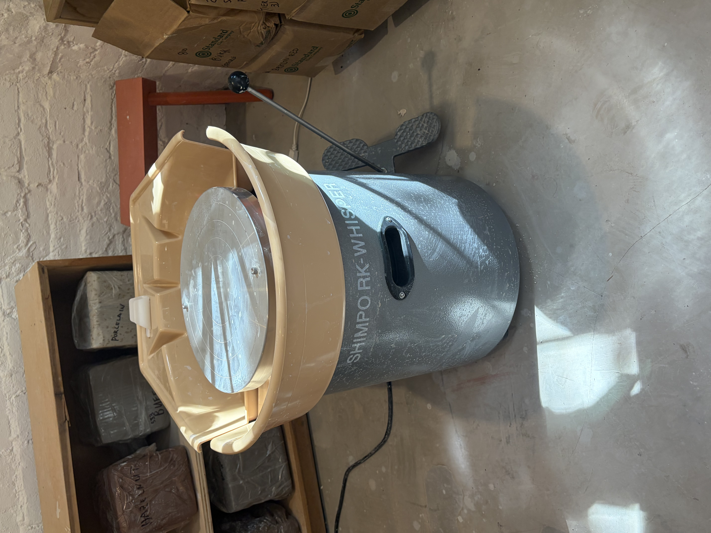
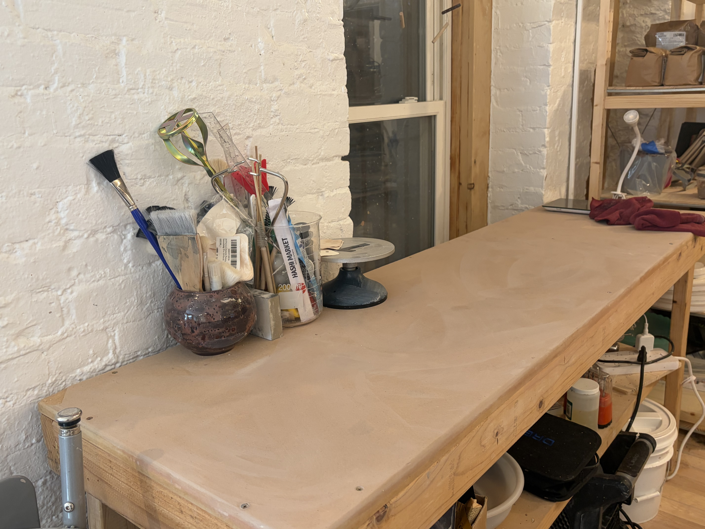
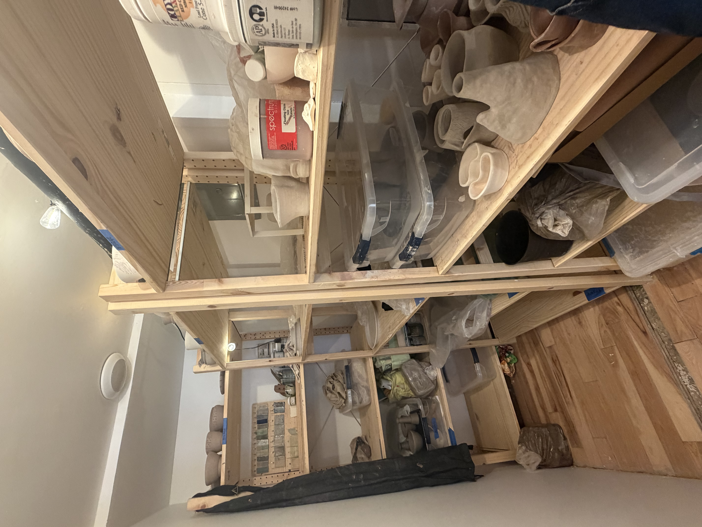
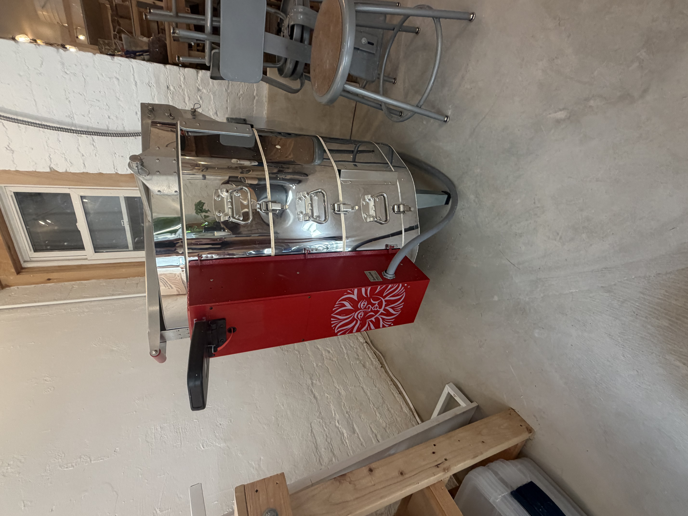
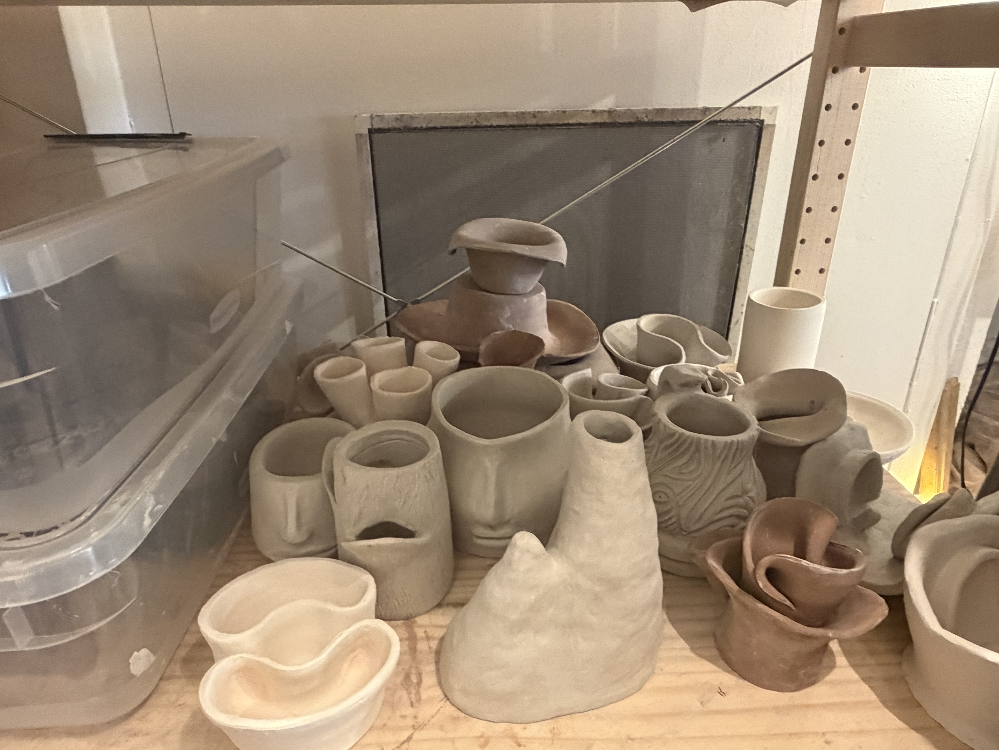
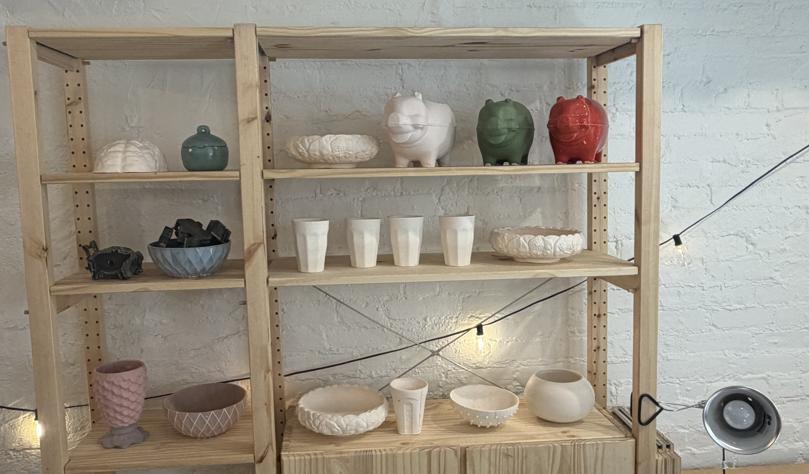

About the studio
A shared pottery studio with the equipment and space to make, learn, and work alongside a creative community.






- 4pottery wheels
- 2handbuilding surfaces
- Openshelf space for storage
- Sharedcommunity tools and reclaim clay
- 1studio sink
- Cone 6food-safe kiln firing